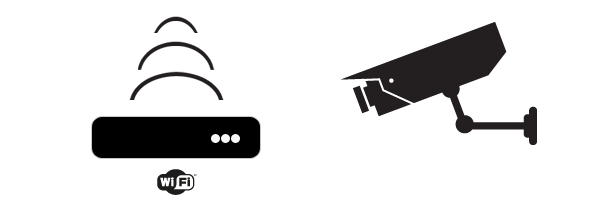

TrueSpot - Wifi Reputation
Gain valuable insight on public wifi network safety based on reputation analysis.

Wifi hotspot reputation analysis
Man in the middle attacks
Like you, we love building awesome products on the web. We love it so much, we decided to help people just like us do it easier, better, and faster. Bootstrap is built for you.

Another scary thing here
Bootstrap is designed to help people of all skill levels—designer or developer, huge nerd or early beginner. Use it as a complete kit or use to start something more complex.
Another cool feature here
Originally built with only modern browsers in mind, Bootstrap has evolved to include support for all major browsers (even IE7!) and, with Bootstrap 2, tablets and smartphones, too.

Good benefit about this
Grid systems aren't everything, but having a durable and flexible one at the core of your work can make development much simpler. Use our built-in grid classes or roll your own.

Another cool feature here
With Bootstrap 2, we've gone fully responsive. Our components are scaled according to a range of resolutions and devices to provide a consistent experience, no matter what.

Clock Speed analysis
Unlike other front-end toolkits, Bootstrap was designed first and foremost as a styleguide to document not only our features, but best practices and living, coded examples.

Another cool feature here
Despite being only 10kb (gzipped), Bootstrap is one of the most complete front-end toolkits out there with dozens of fully functional components ready to be put to use.

Another cool feature here
What good is an awesome design component without easy-to-use, proper, and extensible interactions? With Bootstrap, you get custom-built jQuery plugins to bring your projects to life.

Another cool feature here
Where vanilla CSS falters, LESS excels. Variables, nesting, operations, and mixins in LESS makes coding CSS faster and more efficient with minimal overhead.